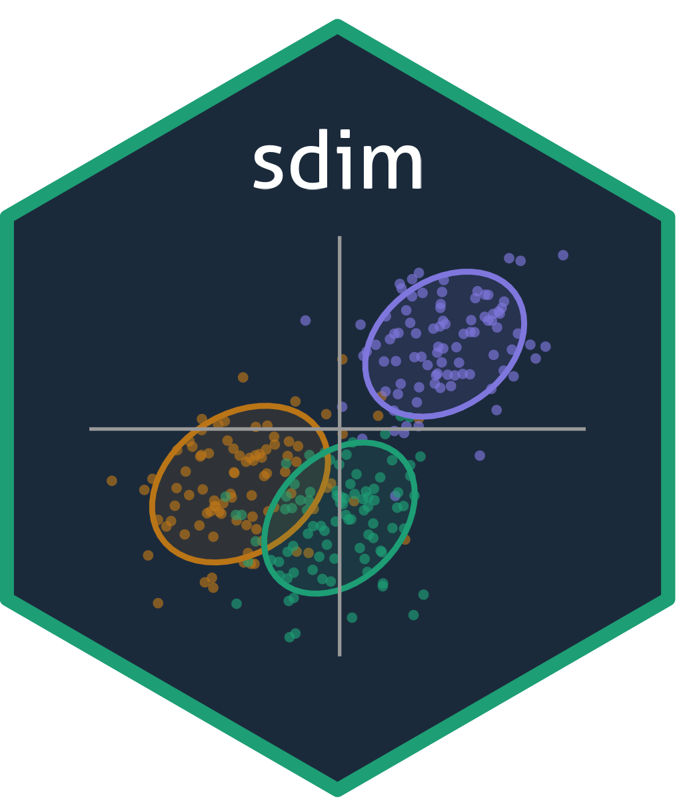

Replicating Huang et al. (2022): Table 4
Source:vignettes/huang2022-table4.Rmd
huang2022-table4.RmdThis vignette replicates the IP growth results from Table 4 of Huang, Jiang, Li, Tong, and Zhou (2022), “Scaled PCA: A New Approach to Dimension Reduction,” Management Science, 68(3).
The table reports out-of-sample R²_OS (%) of forecasting 1-month ahead IP growth using PCA and sPCA factors extracted from 123 FRED-MD macro variables. The benchmark is an AR model with SIC-selected lag order.
Data
The package includes the authors’ original data:
-
huang2022_macro: 720 × 123 matrix of transformed FRED-MD predictors (January 1960 to December 2019). -
huang2022_ip: 720-vector of monthly IP growth (log-difference of IP index).
Methodology
The out-of-sample exercise uses an expanding window:
- Initial estimation window: January 1960 to December 1984 (300 months).
- Out-of-sample period: January 1985 to December 2019 (420 months).
- Benchmark: AR model with lag order selected by SIC (max lag = 1).
- Factor models: ARDL model with AR lags + 1 lag of PCA/sPCA factors.
For sPCA, the scaling regression uses the predictive relationship
y_{t+1} ~ X_{i,t}, and absolute slopes are winsorized at the 90th
percentile. The spca_est() function supports this directly:
when length(target) < nrow(X), the first
length(target) rows are used for the scaling regression
while all rows of X are standardized and used for factor
extraction.
Out-of-sample loop
The run_oos() function uses
select_ar_lag_sic(), estimate_ar_res(), and
estimate_ardl_multi() for the AR benchmark and ARDL
forecasting model, and pca_est() / spca_est()
with predict() for factor extraction. The loop runs ~420
iterations and takes several minutes.
run_oos <- function(y, Z, h = 1, p_max = 1, nfac_max = 5) {
TT <- length(y)
M <- (1984 - 1959) * 12
NN <- TT - M
FC_AR <- rep(NA, NN - (h - 1))
FC_PCA <- matrix(NA, NN - (h - 1), nfac_max)
FC_sPCA <- matrix(NA, NN - (h - 1), nfac_max)
actual_y <- rep(NA, NN - (h - 1))
for (n in seq_len(NN - (h - 1))) {
actual_y[n] <- mean(y[(M + n):(M + n + h - 1)])
y_n <- y[1:(M + n - 1)]
Z_n <- Z[1:(M + n - 1), ]
Zs_n <- oos_standardize(Z_n)
T_n <- length(y_n)
y_n_h <- vapply(
seq_len(T_n - (h - 1)),
function(t) mean(y_n[t:(t + h - 1)]),
numeric(1)
)
# --- AR benchmark with SIC lag selection ---
p_ar <- select_ar_lag_sic(y_n, h, p_max)
if (p_ar > 0L) {
ar_out <- estimate_ar_res(y_n, h, p_ar)
y_n_last <- rev(y_n[(T_n - p_ar + 1):T_n])
FC_AR[n] <- sum(c(1, y_n_last) * ar_out$a_hat)
} else {
FC_AR[n] <- mean(y_n)
}
# --- PCA factors ---
pca_fit <- pca_est(X = Zs_n, nfac = nfac_max)
z_pc_n <- predict(pca_fit, Zs_n)
# --- sPCA factors (predictive alignment + winsorization) ---
spca_fit <- spca_est(
target = y_n_h[2:length(y_n_h)],
X = Z_n,
nfac = nfac_max,
winsorize = TRUE,
winsor_probs = c(0, 90)
)
z_trans_n <- predict(spca_fit, Z_n)
# --- ARDL forecast for each number of factors ---
for (cc in seq_len(nfac_max)) {
for (jj in 1:2) {
z_f <- if (jj == 1) {
z_pc_n[, 1:cc, drop = FALSE]
} else {
z_trans_n[, 1:cc, drop = FALSE]
}
p_ardl <- c(p_ar, 1)
if (p_ar > 0L) {
c_hat <- estimate_ardl_multi(y_n, z_f, h, p_ardl)
y_n_last <- rev(y_n[(T_n - p_ar + 1):T_n])
fc <- sum(c(1, y_n_last, z_f[T_n, ]) * c_hat)
} else {
dep <- y_n_h[2:length(y_n_h)]
reg <- cbind(1, z_f[1:(length(y_n_h) - 1 - (h - 1)), 1:cc])
c_hat <- lm.fit(x = reg, y = dep)$coefficients
fc <- sum(c(1, z_f[T_n, 1:cc]) * c_hat)
}
if (jj == 1) FC_PCA[n, cc] <- fc
if (jj == 2) FC_sPCA[n, cc] <- fc
}
}
}
# R²_OS for each number of factors
r2_pca <- r2_spca <- numeric(nfac_max)
sse_ar <- sum((actual_y - FC_AR)^2)
for (cc in seq_len(nfac_max)) {
r2_pca[cc] <- 100 * (1 - sum((actual_y - FC_PCA[, cc])^2) / sse_ar)
r2_spca[cc] <- 100 * (1 - sum((actual_y - FC_sPCA[, cc])^2) / sse_ar)
}
data.frame(K = seq_len(nfac_max), PCA = round(r2_pca, 2), sPCA = round(r2_spca, 2))
}
# Run
res <- run_oos(huang2022_ip, huang2022_macro, h = 1, p_max = 1, nfac_max = 5)
print(res)Results
Running the code above produces:
K PCA sPCA
1 8.97 9.65
2 8.06 10.68
3 8.22 11.09
4 7.99 11.97
5 7.88 13.17With 5 factors, PCA achieves R²_OS = 7.88% and sPCA achieves R²_OS = 13.17% — both matching the paper exactly. The sPCA consistently outperforms PCA across all factor counts, confirming that scaling predictors by their target-predictive slopes concentrates forecasting-relevant information into the first few factors.
Key spca_est() features used
Predictive alignment: passing a shorter
target(T-1 elements) with the fullX(T rows) ensures the scaling regression uses the predictive relationship y_{t+1} ~ X_{i,t} while factors are extracted from the full training window.Winsorization:
winsorize = TRUEwithwinsor_probs = c(0, 90)caps extreme scaling coefficients at the 90th percentile, matching the authors’ MATLAB implementation.predict(): projects the full trainingXonto the estimated sPCA loadings, correctly applying the training-window standardization and scaling.
References
Huang, D., Jiang, F., Li, K., Tong, G., and Zhou, G. (2022). Scaled PCA: A New Approach to Dimension Reduction. Management Science, 68(3), 1678–1695. doi:[10.1287/mnsc.2021.4020](https://doi.org/10.1287/mnsc.2021.4020)